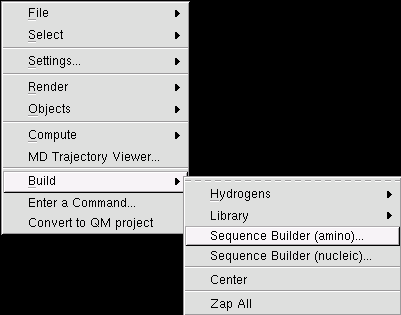
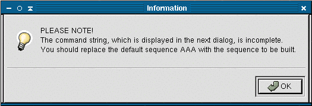
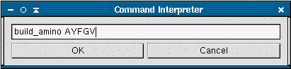
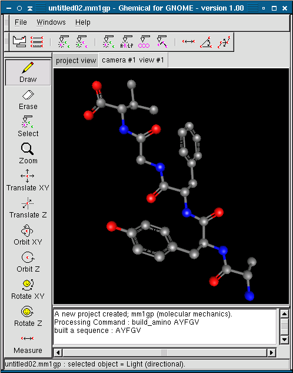

Ghemical has a tool to simplify building amino and nucleic acid sequences. The Sequencer Builder allows the user to enter a string of letters denoting amino or nucleic acid sequences. To activate the sequence builder, right click on the view, select Build from the pop-up menu and then select either Sequence Builder (amino) or Sequence Builder (nucleic).
This tool currently reads it's input from a textbox. You will need to change the text "AAA" to the amino acid sequence of the peptide you are building. A window containing explaining this will appear after you click on the sequence builder.
The sequence should be entered as a string of the one letter abbreviations for the acids without spaces or other punctuation. When you are done entering the sequence, click Ok.
The chain will appear in the view window, and you may manipulate it in the same way as you would any other molecule. The sequences are built without hydrogens, so if you want to have the hydrogens present you must add them with the Add Hydrogen tool.
For convinience, a table of amino acids and their abbreviations is reproduced here.